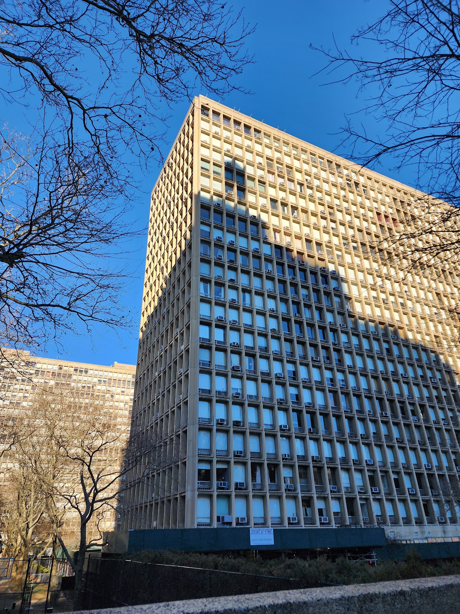
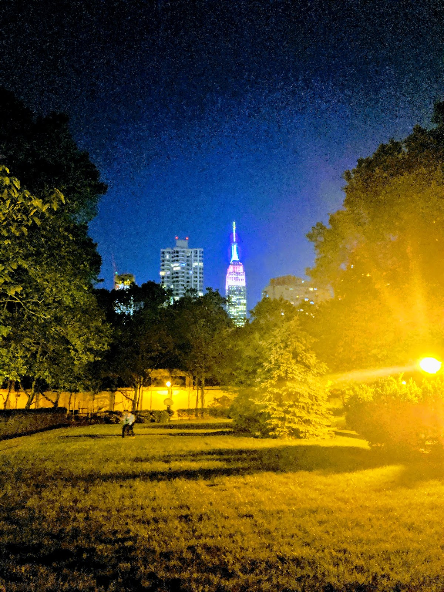
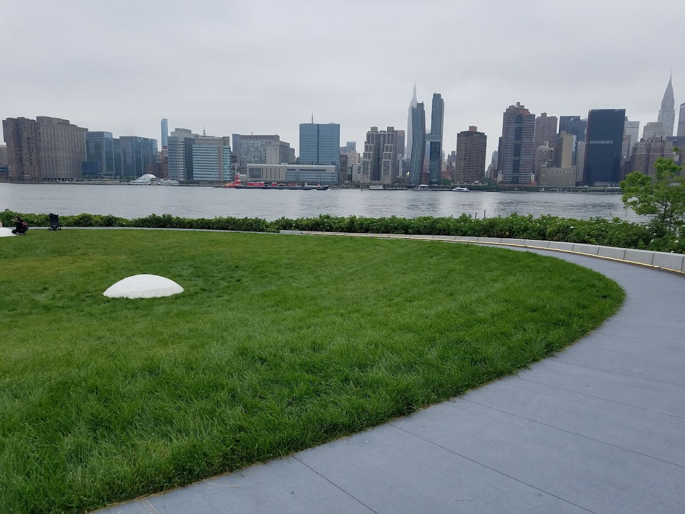
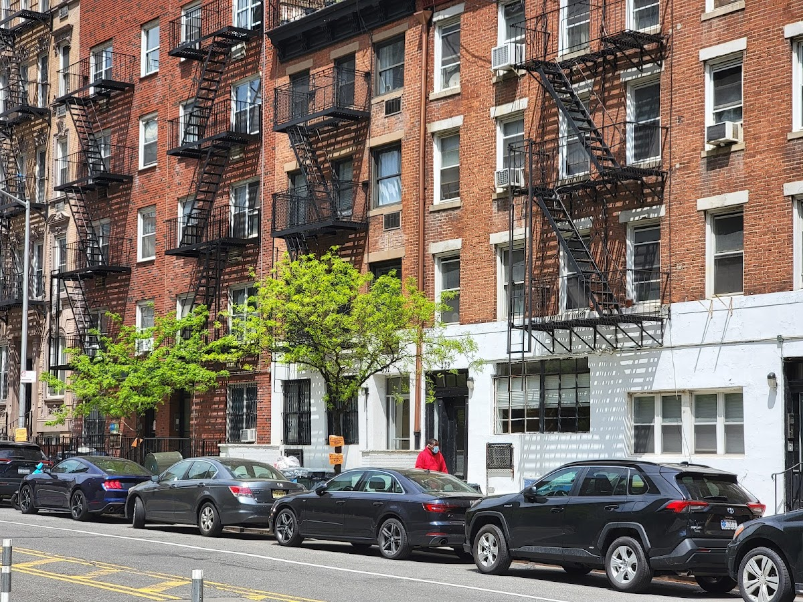

Shared spaces
Kips Bay Towers
A pair of residential towers located in the Kips Bay neighborhood of Manhattan, known for their modernist architecture.
Background
Designed by architect I.M. Pei, Kips Bay Towers were completed in the 1960s. The buildings are notable for their Brutalist design and the large private courtyard that provides green space for residents. They are a significant example of mid-20th-century urban housing.
Original AI-assisted background; not independently verified.
From the original map
3 acres of green courtyard?!?
Homes and shared residential spaces may be private. View from public streets unless entry is clearly permitted; map pins are reference points, not confirmed entrances.
Nearby places
Straight-line distances, not walking routes.
Discussion & corrections




Photo credits
Jorge Rosillo, Siim Riisenberg, Clifford Toy, Derris Golding, Gabe Ilizarov, G A (TheFamous), walaa alharthi, Jonathan Letzter, S W40.74268, -73.97583 · Explore the surrounding area ↗